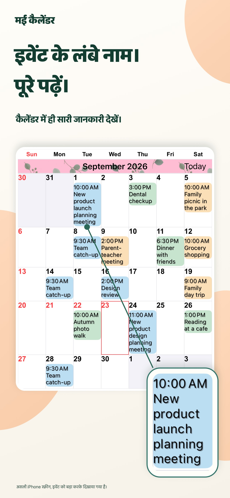
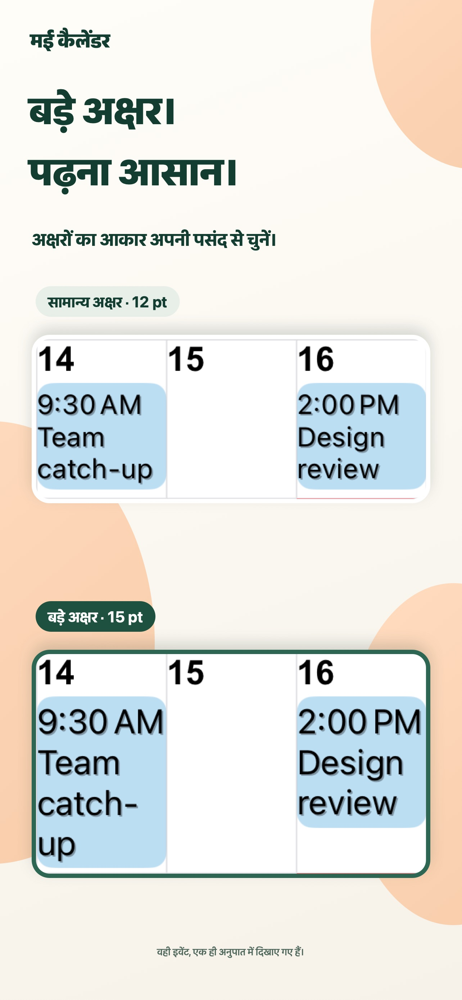
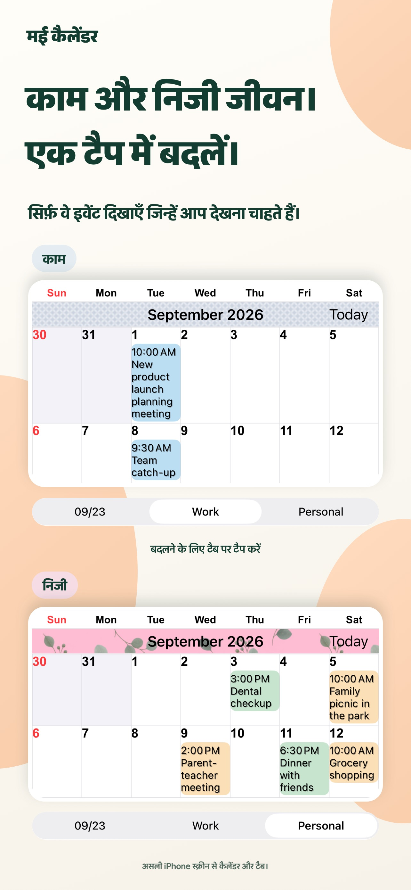
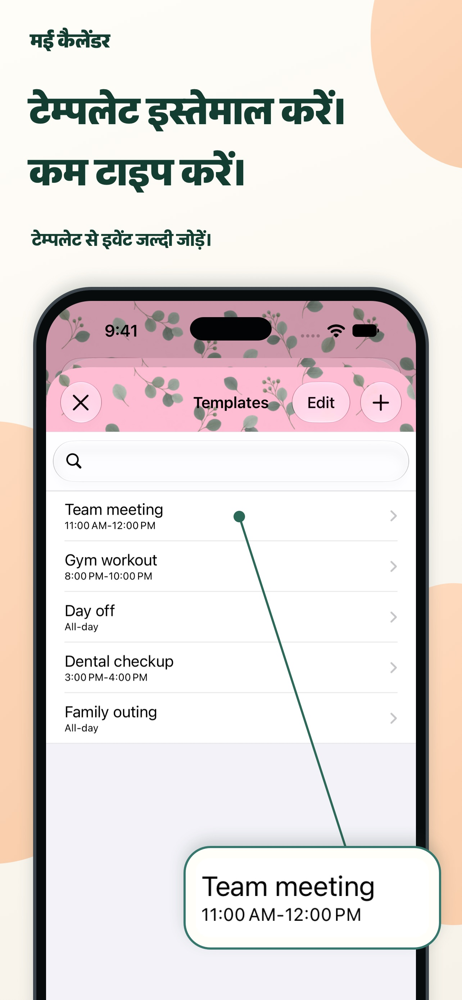

दिखावट आपकी पसंद की।
थीम के रंग, ईवेंट बैकग्राउंड और पैटर्न मिलाकर अपना कैलेंडर बनाएँ।
हर दिन का साफ़ नज़ारा।
लंबे ईवेंट नाम, सीधे महीने के दृश्य में। टेक्स्ट और रंग अपनी पसंद के रखें और रोज़ की योजनाएँ एक नज़र में देखें।
iPhone और iPad के लिएApp Store पर देखेंमुफ़्त डाउनलोड · ऐप के अंदर ख़रीदारी

दिन की योजना बनाना थोड़ा और आसान।
काम और निजी जीवन, सब एक ही जगह।आपके रोज़मर्रा के लिए
कैलेंडर को अपनी योजना बनाने की शैली के अनुसार ढालें।
लंबे नाम कई पंक्तियों में दिखते हैं। फ़ॉन्ट और आकार बदलें, ताकि पूरे महीने को देखते हुए विवरण भी पढ़ सकें।

कैलेंडर के संयोजन सहेजें और एक टैप से काम तथा निजी योजनाओं के बीच बदलें।

मीटिंग, व्यायाम और अपॉइंटमेंट को टेम्पलेट के रूप में सहेजें। तारीख पर दो बार टैप करके टेम्पलेट चुनें और ईवेंट जोड़ें।

छोटी बातें, बड़ा अंतर।
थीम के रंग, ईवेंट बैकग्राउंड और पैटर्न मिलाकर अपना कैलेंडर बनाएँ।
20 तरह के विजेट में से चुनें। इनमें केवल iPad के लिए उपलब्ध विजेट भी हैं।
केवल वे ईवेंट दिखाएँ जो आपके दर्ज किए गए टेक्स्ट से मेल खाते हैं।
प्रश्न और उत्तर
डाउनलोड मुफ़्त है और ऐप के अंदर ख़रीदारी उपलब्ध है। मौजूदा कीमतों और विकल्पों के लिए App Store देखें। App Store पर देखें
हाँ, iPhone और iPad दोनों पर। कुछ विजेट केवल iPad के लिए हैं। नवीनतम सिस्टम आवश्यकताएँ App Store पर देखें।
रिमाइंडर, छुट्टियाँ, सप्ताह संख्या और चंद्र कैलेंडर की जानकारी समर्थित हैं। सप्ताह का पहला दिन और समय क्षेत्र भी सेट कर सकते हैं।
सूचनाएँ Apple के Calendar ऐप से आती हैं। ईवेंट शुरू होने या समाप्त होने से पहले अलर्ट सेट कर सकते हैं।
हर दिन और स्पष्ट।
अपने लिए सही कैलेंडर के साथ शुरुआत करें।